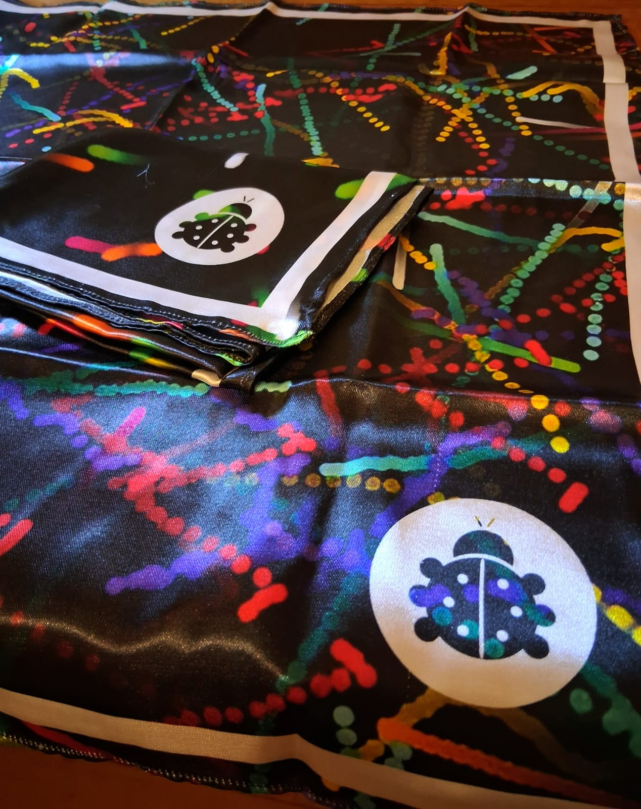
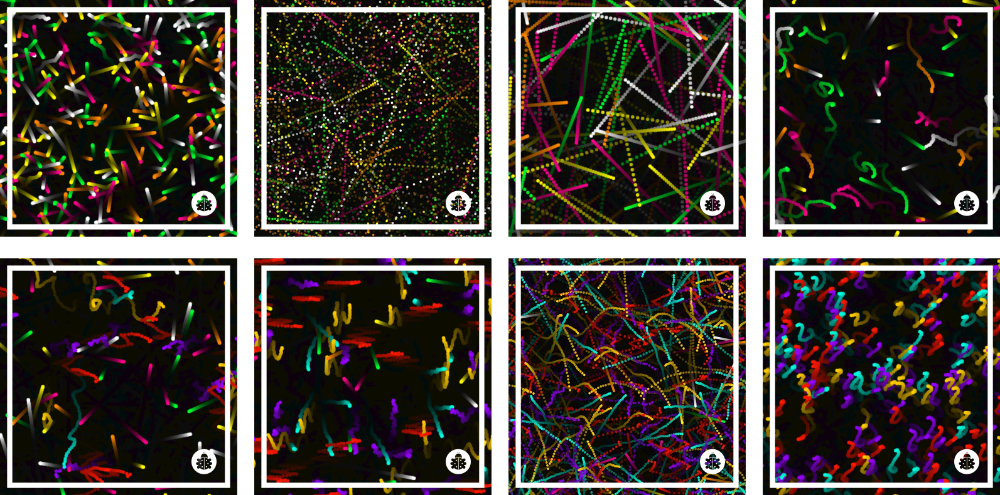
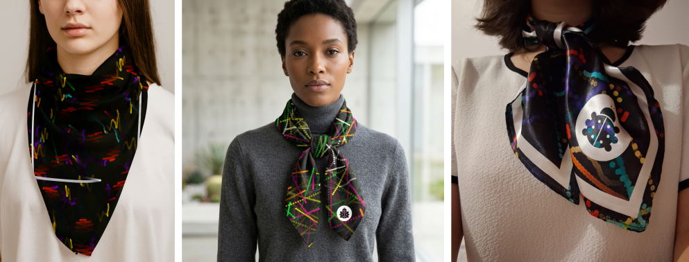

Galeria




Entre os dias 20 e 22 de agosto de 2025, ocorreu a DCC Week, um evento voltado principalmente para estudantes de graduação do Departamento de Ciência da Computação. Este relato pictórico apresenta o BITS (Bugs In The System), um sistema procedural interativo desenvolvido para a geração de estampas para lenços. O sistema foi exibido durante o evento como uma iniciativa de popularização da Ciência e da Tecnologia, especialmente no contexto da Criatividade Computacional. Este trabalho discute como práticas tradicionais de design podem ser traduzidas para fluxos de trabalho computacionais por meio de uma abordagem de Research through Design (RtD), fundamentada no processo Double Diamond.
Descobrir & Definir
Tradicionalmente, o processo de design começa com o estabelecimento de um conceito capaz de orientar o desenvolvimento visual do projeto. No caso do BITS, a inspiração inicial surgiu de um artigo do Science Museum Group que sugere que o mundo está se tornando menos colorido ao longo do tempo. Instigada por essa perspectiva e pela intenção de construir uma estética diretamente conectada aos processos computacionais e à visualidade procedural dos padrões gerados, optou-se por uma linguagem visual vibrante que combina elementos da pop art, cyberpunk, estética urbana, grafite, circuitos impressos e glitch art.
Nesse contexto, foi desenvolvido um sistema procedural construtivo e interativo no qual o erro deixa de ser tratado como uma falha e passa a atuar como elemento visual e ornamental. O sistema simula partículas que se movimentam pela tela e produzem padrões a partir de regras computacionais. O glitch é introduzido por meio da interação do usuário, que pode alterar parâmetros como quantidade de partículas, nível de entropia, velocidade, comportamento e intensidade das perturbações. Essas intervenções modificam continuamente a dinâmica do sistema, produzindo composições visuais únicas e imprevisíveis. As cores foram selecionadas para remeter à estética neon presente em linguagens visuais associadas à cultura digital e ao imaginário tecnológico contemporâneo.
Desenvolver & Entregar
Após a implementação do sistema, os usuários puderam interagir com as partículas por meio de controles na interface e manipulação direta dos elementos visuais, gerando composições ornamentais em tempo real. Quando satisfeitos com os resultados, podiam capturar automaticamente as imagens produzidas e salvá-las em seus computadores. Como as saídas preservavam o enquadramento retangular da tela, foram necessárias etapas posteriores de enquadramento, recorte e ampliação de resolução para adaptar as composições ao formato quadrado dos lenços e às exigências da impressão têxtil. Esse processo evidencia como práticas tradicionais de composição visual, curadoria e refinamento continuam desempenhando um papel importante mesmo em fluxos de trabalho computacionais.
Posteriormente, foram realizados experimentos com modelos de inteligência artificial generativa para investigar sua capacidade de reinterpretar e expandir os padrões procedurais produzidos pelo sistema. Os modelos foram utilizados para inserir elementos gráficos, explorar novas possibilidades ornamentais e gerar mockups têxteis. Os resultados demonstraram que esses sistemas conseguem incorporar referências visuais e estilos estéticos diversos, ampliando o espaço de exploração criativa. Em contrapartida, observou-se que os modelos frequentemente retornavam imagens já aplicadas sobre tecidos simulados, exigindo refinamentos adicionais para adequação à impressão por sublimação.
De forma semelhante ao que ocorre em processos artesanais, nos quais diferentes agentes compartilham o controle criativo durante a produção, o BITS distribui a autoria entre sistema e designer. Enquanto o sistema define estruturas visuais e paramétricas e a inteligência artificial contribui com interpretações e expansões visuais, as decisões relacionadas à seleção, curadoria, refinamento e materialização permanecem dependentes da ação humana. Os lenços finais foram refinados manualmente, impressos em cetim por meio de sublimação e posteriormente finalizados por costura, consolidando um processo híbrido de co-criação entre design tradicional, sistemas procedurais e inteligência artificial generativa.
Ferramentas utilizadas: O sistema BITS foi desenvolvido utilizando HTML e Java Script para a implementação dos algoritmos procedurais e da interface interativa. O refinamento das estampas foi realizado no Inkscape, permitindo ajustes vetoriais e preparação dos arquivos para produção. Também foram empregados modelos de inteligência artificial generativa, incluindo GPT-4o e Nano Banana da Gemini/Google, para experimentos de expansão visual, inserção de elementos gráficos e geração de mockups têxteis. A produção física dos protótipos envolveu impressão por sublimação em tecido de cetim e acabamento manual por costura.
Durante a DCC Week, o sistema BITS e os lenços produzidos a partir dele foram apresentados ao público como uma demonstração de criatividade computacional aplicada ao design têxtil. Ao longo do evento, estudantes, professores e visitantes demonstraram curiosidade tanto em relação aos lenços físicos quanto ao funcionamento do sistema generativo. As interações geraram discussões sobre autoria, inteligência artificial, design generativo e as possibilidades de aplicação dessas tecnologias em contextos criativos, contribuindo para a divulgação científica e para a aproximação entre computação e design.
Como resultado, foram produzidos protótipos físicos de lenços em cetim, um sistema interativo acessível online e uma série de experimentos envolvendo inteligência artificial generativa para expansão e refinamento das estampas. O projeto também permitiu investigar diferentes níveis de colaboração entre designer, sistema procedural e modelos de IA, evidenciando o papel da curadoria humana na seleção e materialização dos resultados.
Se pudesse evoluir o projeto, exploraria processos de produção têxtil mais avançados, especialmente o uso de tintas fluorescentes reativas à luz negra. Para isso, seria necessário adaptar o fluxo de trabalho às especificações da indústria gráfica, incluindo a preparação adequada dos arquivos em perfis de cor para impressão e sublimação, possibilitando um controle mais preciso sobre a reprodução cromática e os efeitos visuais desejados. Além disso, realizaria ajustes na composição dos lenços, alinhando o símbolo da joaninha à diagonal da peça e reduzindo ligeiramente sua escala. Essas modificações contribuiriam para uma estética mais elegante, delicada e integrada ao padrão ornamental, tornando o elemento visual mais decorativo durante o uso do lenço.
O principal aprendizado foi compreender que sistemas procedurais e inteligências artificiais não substituem o processo criativo humano, mas ampliam seu espaço de exploração. Nesse contexto, o papel do designer se expande: além de criar, passa a selecionar, interpretar, refinar e conectar diferentes agentes criativos em um processo de coautoria mediado pela tecnologia.


